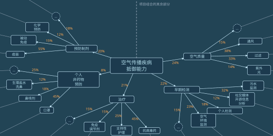
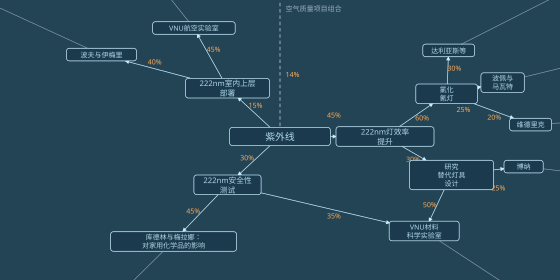

格拉迪亚斯沿着一条两侧树荫覆盖的小路往前走，前方是那座巨大的圆形议会大厦。
走到大厦的一扇侧门，他把手表往那个绿色圆圈上一贴。
圆圈嗡地响了一声。
| 维里迪亚议会 |
|---|
| 邀请凭证已验证 |
门开了。格拉迪亚斯走进去，跟着手表转达的指示往前走：向前，右转，再向前，左边第三扇门。
格拉迪亚斯走到那扇门前，又贴了一下手表。
门开了。
屋里有个穿维里迪亚议员长袍的男人。
“格拉迪亚斯，谢谢你跑这一趟！”参议员高声说。
“也谢谢您肯见我，韦尔多参议员！”
“请坐。”
一台机器人滑进房间。
“jie mo kai tu jie hei ja ma？”机器人问。
格拉迪亚斯愣了一下，有些吃惊。
韦尔多笑了。
“几个月前我调了设置，让它这么做。算是个小提醒：这世上还有别的国家，而且它们也很重要。”
韦尔多在机器人的屏幕上点了几下，把屏幕转向格拉迪亚斯。
屏幕上全是泽国语。格拉迪亚斯一脸茫然，目光四处游移。
“哦，想要水就说 ja，想要茶就说 kai ja，字面意思就是‘植物水’。”
格拉迪亚斯点了 kai ja。要是真在泽国待上几个月，不如早点适应，先从喝茶开始——顺便记住本地话怎么说。机器人嘀了一声，表示收到订单，然后悄无声息地滑开。房门短暂地开了一下，机器人出去了。
“所以您觉得我该去泽国？”
“你显然很聪明。你们的秘密会议说了什么，我当然不知道，但从听证会上你说的那些话，还有你几年前最初递交给掌舵会的申请来看，我觉得你是个善良又聪明的人。我们国家需要像你这样的人多出来做事。当掌则人是不错，可话又说回来，你也就是一千多人里的一个。我觉得去泽国亲身经历一番，再带点东西回来，可能更有意义。”
“您觉得是好主意，我就乐意去。可到了那边该找谁聊？这才是我今天想听您意见的地方。”
格拉迪亚斯故意没提泽——不是想隐瞒这层间接关系，而是想先听听韦尔多完全独立的判断。
“我关系最硬的是他们那边一些作家和音乐人。”他说着，轻轻笑了。“不过我也认识几个他们政府里的人，尤其是安全和卫生部门。我把联系方式发给你，再跟他们打个招呼。别只停在这些人身上，但我想他们能帮你开个头。”
“多谢，那太有帮助了！”
“那边的人我只间接认识两个；我妻子在自由城经济研究所偶遇过他们。泽和白，两人都下民本棋。”
韦尔多睁大了眼睛。“说实话，你手上的门路可能比我还硬。你看泽国的民本棋比赛就知道，那些棋手，还有训练他们的人，明显都是顶尖的。要是让我找人护着我对付北极人，比起泽国正规军，我几乎更信他们。”
“泽和白水平有多高？打进过什么锦标赛吗？”
“塞拉上次跟我说，泽赢了半决赛，然后红郡被入侵，决赛就取消了。”
“半决赛？是市级那种吗？”
“是全国赛。”
韦尔多盯着他，又惊又喜。
“那你的关系肯定比我强。等你回来，可得跟我多讲讲泽国！”
“总之，我把刚才提到的那几位介绍给你，等你过去就能见着他们。多听几种说法总没坏处。”
格拉迪亚斯感激地点点头。
“哦，对了，说到多听几种说法，图谱资助的一位理事马上就要来见我。你也想跟他聊聊吗？”
“聊什么？”
“哦，聊他的工作，聊他对图谱资助的看法，当然还有泽国。”
“行，那就聊聊。”
几分钟后，门开了，另一个男人走进来。他穿着维里迪亚的隐私袍，但没戴面罩和兜帽。
“贝尔戈尔，又见面了，真好！”
“我也很高兴见到你，韦尔多！”
“来认识一下格拉迪亚斯，他是掌则人。”
“幸会，贝尔戈尔。”
“幸会，格拉迪亚斯！”
“格拉迪亚斯在考虑近期去泽国。我们想，也许你可以多给他讲讲图谱资助，再就他在泽国该做什么、该学什么给他些建议。”
“行，乐意之至。你对图谱资助怎么运作，了解多少？”
“老实说，不太了解。”
“那太好了。”
他掏出手持终端，按了几个键。屏幕上展开一张图，他拿给格拉迪亚斯看。

“这是空气传播疾病防治的子图。图上每一个节点，密码学网络都会随机抽一个委员会，由它决定这个节点正下方那些边的权重。”
“所以它的安全性和合议庭、掌舵会是一个路子。现在给资助配上这么一套东西尤其重要——北极人刚刚对二次方资助发动了和蓝鲸一样的那套攻击，规模却是十倍；至于更传统的那种分配方式，他们当然也会照样去插手。”
“你说得一点没错。最近连掌则人都在挨打，不过靠着各种保密措施和内部通讯壁垒，至少眼下这套体系还撑得住。”
“哦，是这样吗？那还好。不过我挺遗憾的，我们还没什么好办法让这两套东西更民主。听取公民大会的意见是好事，宣谕使也是好事，可它们都替代不了真正的公众问责。”
“总之，图谱资助的设计跟合议庭、掌舵会的运作有一个不同：它能容下更细的专业分工。毕竟分配资金是件相当技术性的事。”
“目标是尽量把每一次资金分配的决定拆成更好处理的小块。别问‘维里迪亚全部公共资金里，该有多大比例给这项紫外线灯研究’，而要问：多大比例给卫生，然后在卫生里，多大比例给空气传播疾病，这样一层层往下分。”
“要是一个项目同时有利于两个领域——比如某种灯，不知怎么的对紫外线灯和防务都有用——那这张图就不再是树，而成了正经的有向无环图。一个节点可以有多个父节点，沿各条路径拿到的资金会累加。”
“所以，每个节点分到的资金，由委员会负责在它的直接子节点之间分配？”
“对。”
“他们能删掉子节点，或者新建子节点吗？”
“当然能。这图本来就是这么做出来的。”
“这太有意思了。”
“我是说，这一切完全取决于这些委员会管不管用，对吧？专业化程度越高，越可能被特殊利益集团把持；随机化程度越高，就越容易让一群对自己要决定的事一无所知的人来做决定？”
“当然，权衡永远都在。”
“还有另一个权衡。事实证明，让委员会达到能分辨项目好坏的水平相当容易，但要它们分辨好项目和极好的项目就非常难。所以近来，针对图里较低的层级，出现了一种主张：干脆在排名顶端直接随机化。如果委员会说你进了前10%，那不管你排91还是99，入选的机会都一样。”
“所以一个人越是排在90以上，基本上就越不用操心去迎合委员会，只管做自己觉得对的事就行。”
“正是。有时候你其实并不想要问责，而是想给人的内在动机留出空间。站在最顶端的人，可能比委员会还聪明。‘截线以上随机化’做的就是这件事：没有问责就成不了事的人，给他问责；最优秀的人，则让他不必受激励驱使——他们几乎不用费什么力气，就能让委员会相信自己的工作足够好。”
“总之，放大到单个项目的层级，就是这样。”

“让这些随机抽出的图谱资助委员会在这么细的层级上做决定，明智吗？”
“我自己也不确定。这个设计的好处是，它总能自己演化，而不用改结构。委员会大可以决定把整个类别‘交给’维里迪亚国立大学材料科学实验室，让实验室内部自行分配。其实开源社交媒体分析那一项，我们差不多就是这么干的，80%直接给了银聊。”
“蓝鲸不太高兴，不过，嘿，谁让他们什么都非得封闭、专有呢。”
“那这一切跟泽国有什么关系？”
“啊，其实这些技术有很多都传到了泽国，他们开始更认真地对待空气过滤器和紫外线灯——有少数人已经在疑神疑鬼，怕北极人哪天故意放出一场瘟疫来打他们。”
“北极人有没有可能对他们发动一场瘟疫，而这场瘟疫最终不会反弹到北极人自己身上？”
“嗯，如果北极的抗疫技术远远领先于世界其他地方，那他们就能放出一场瘟疫，而只有他们能有效保护自己的人不受其害。这也是为什么把这一切开源——至少是防御性的那些东西——如此有价值：让整个世界站在同一条水平线上，谁也甭想一边放火，一边当唯一有防火服的人。”
“总之，你要是真去了泽国，回来一定得跟我讲讲你了解到的公共卫生情况——我很好奇！”
格拉迪亚斯推开家门，走了进去。
塞拉和孩子们已经在吃晚饭了。
“今天是你第一次投票，对吧？”塞拉问。
“是啊，难得你还记得！”
“那你今晚又要出去吗？”兹文问。
“哦，不用。要本人到场的是几个月前的讨论，还有密钥登记——那是我在议会开完会之后马上就办了。”
“后来我们掌则人的线上讨论组也聊过几次，不过那个群在投票前七天就自动关闭了——理由是要留一段静默期，给独立思考多腾点空间。”
“唉，那静默期开始时，红郡已经被吞并了。当时大家是什么反应？”
“那些说该把军用硬件从评则最优的几档里剔除的人，我看全都沉默了。后来十八提了一条新修正案，要提高税率档，把开放的激励再往上推。这条我大概会投赞成。”
“那就好。”
“你在议会的会开得怎么样？”
“很顺利。参议员和图谱资助那边的一位都挺支持我去。不过他们说，要论帮我在那边跑这一趟，泽可能比他们认识的任何人都更合适！”
“这倒说得通。谁都知道，有意思的事从来不在泽国官方政府那儿发生。”
“那我回头跟泽说说，让你们俩联系上！”
格拉迪亚斯、塞拉和孩子们各自吃了几口。很快，餐桌上的话头又接了起来。
“费布里克、赫雷达，你们的消息要不要说说？”
“冬季学期我们要去北林交换！”赫雷达骄傲地喊道。
“哇，那地方偏东北挺远的，几乎贴着北极边界了。”格拉迪亚斯答道。
“可好玩了，我们能穿着小型飞行器从山上滑雪冲下去，再一路滑翔下来！”赫雷达兴奋地说。“而且那儿也不真的贴着边界，北林离边界有200多公里。我还是第一次去呢！”
“那你们去那儿干什么？”格拉迪亚斯问。
“维里迪亚最好的数学大学就在那儿，”赫雷达答道。“我在班里数学排前5%，所以被选去那边上专门的课程。”
“我也一样，”费布里克接话。“不过我是计算机方向。”
“莉莉不是也想去北林吗？”
莉莉在洗手间，没法回答。
“维尔说，只要她考试考到75%，夏天就带她去。”
“她更喜欢夏天，没那么喜欢冷。”
格拉迪亚斯的手持终端震了一下。
“嗯，硬件开放度评则的表决开始了。”
| 动议 | 表决 |
|---|---|
| 在第1档第3行、第2档第3行之后增加： “军事、监视及反监视用途的产品不适用本档” | |
| 税率档从 0 / 6 / 12 / 18 / 24 提高到 0 / 10 / 20 / 26 / 32 | |
| 将第4档第4行、第5档第4行的 “以硬件手段阻止第三方维修” 改为 “以硬件或软件手段阻止第三方维修” |
有点虎头蛇尾，格拉迪亚斯想。投票前的几个月里，那么多仪式、当面会议、辩论和工作。结果投票本身不过是在屏幕上……点几个按钮。
这倒也合理，格拉迪亚斯想。按密码学的运作方式，只要密钥登记是安全的，这一步完全可以在自己家里、自己的设备上完成。就算德尔瓦特真来敲门，非要在他背后盯着他，从头到尾看完那15个长时的投票窗口，他也没法证明自己设备上的密钥就是登记过的那把——说不定那只是个幌子，真正投票的是莫夫、塞拉，甚至兹文。
格拉迪亚斯最后看了一眼屏幕，若无其事地按下：反对、赞成、赞成。
Gladias walked forward along a path covered with trees on both sides, toward the large circular parliament building in front.
When he arrived at a side door of the building, he tapped his watch on the green circle.
The circle buzzed.
| Veridian Parliament |
|---|
| Proof of invitation verified. |
The door opened. Gladias walked in, and followed the instructions that were being relayed by his watch. Forward, then right turn, then forward, then third door on the left.
Gladias got to the door, and tapped his watch again.
The door opened.
Inside, he saw a man wearing a Veridian parliament robe.
"Gladias, thank you for coming!", the senator exclaimed.
"And thank you for seeing me, Senator Verdow!"
"Please sit down."
A robot slid into the room.
"jie mo kai tu jie hei ja ma?", the robot asked.
Gladias briefly stared in surprise.
Verdow laughed.
"I adjusted the settings to make it do that a few months ago. Just a little something as a reminder that other countries exist and that they matter."
Verdow tapped a few buttons on the robot's screen, and turned the screen toward Gladias.
The screen was in Dzegoban. Gladias's eyes wandered around with confusion.
"Oh, if you want water, that's 'ja'. And if you want tea, that's 'kai ja'. Literally 'plant water'."
Gladias clicked on 'kai ja'. If he's going to be in Dzego for a few months, might as well get acclimated and start drinking some tea - and knowing the local word for it. The robot beeped, signaling acceptance of the order, and began to quietly glide away from them. The room door briefly opened, and the robot exited the room.
"So you think I should go to Dzego?"
"You're obviously smart. Of course I have no idea what you say in your secret meetings, but judging from everything you said in the hearing, and from your original application to the Order years ago, I think you're a good and smart person. We need people like you to be more active in serving our country. Being a Keeper is nice, but come on, you're only one of over a thousand. I think getting and bringing back some first-hand experience from Dzego could be even more meaningful."
"If you think it's a good idea, I'm happy to. But who should I talk to there? That's what I wanted to get your input on."
Gladias intentionally omitted any mention of Zei - not out of any desire to hide that indirect connection, but because he wanted to get a fully independent answer from Verdow first.
"Well my strongest connections are with some of their authors and musicians", he said, gently laughing. "Though I also know a few people in the government there, especially the security and health ministry. I'll send you their contacts, and give them a heads up. I wouldn't stop with them, but I think they can help get you started."
"Thanks, that would help a lot!"
"I only know two people from there, indirectly; my wife met them at a chance meeting in the Economics Institute in Freetown. Zei and Bai, they were in Minpentai."
Verdow's eyes opened. "Honestly, you might have a better lead than I do. When you see the Minpentai games in Dzego, the players and the people who train them are clearly top-notch. If I had to find someone to defend me against the Arctics, I'd almost trust them over the actual Dzego army."
"How advanced are Zei and Bai? Did they get into any of the championships?"
"Last thing Seila told me, Zei won the semi-finals, and then they cancelled the finals when Redshire was invaded."
"The semi-finals, like municipal level?"
"National."
Verdow stared with a mix of surprise and joy.
"Your connections are definitely better than mine then. When you come back, you'll have to tell me more about Dzego!"
"Anyway, I'll introduce you to the other folks I mentioned so you can see them when you come. It's always good to get more than one perspective."
Gladias nodded appreciatively.
"Oh, by the way, speaking of getting more perspectives, one of the Graph Funding stewards is here about to visit me. You want to talk to him too?"
"About what?"
"Oh, his work, how he's feeling about Graph Funding, and of course Dzego."
"Sure, why not?"
A few minutes later, the door opened, and another man, wearing a Veridian privacy robe but without the face cover and hood, walked in.
"Belgor, good to see you again!"
"Good to see you too, Verdow!"
"And meet Gladias, he's a Keeper."
"Nice to meet you, Belgor."
"And nice to meet you, Gladias!"
"So Gladias is thinking of going to Dzego soon. We thought that maybe you should tell him more about Graph Funding, and any advice on what he should do or learn in Dzego."
"Sure, happy to. How familiar are you with how Graph Funding works?"
"Honestly, not very."
"Great."
He took out his hand device, and pressed some buttons. A diagram opened up on the screen, and he showed it to Gladias.
"This is the subgraph for airborne disease resistance. For each node on the graph, the cryptographic network randomly selects a committee, that makes the decision of what weights the edges right below that node get."
"So it's secure in the same way the Courts and the Order of Steering are. Having something like that for funding is especially important now, given that the Arctics just did the same attack on Quadratic Funding that Bluewhale did but at ten times the scale - and of course any more traditional style of allocation, they would try to interfere with as well."
"Oh you're definitely right. Even the Keepers are getting attacked lately, though with all the secrecy and internal communication barriers, at least for now the system is holding."
"Oh is that so? Good to hear. Though I am sad that we don't have a good way to make both of these things more democratic. Listening to citizens' assemblies is good and Heralds are good, but they're not a substitute for actual public accountability."
"Anyway, one difference between the Graph Funding design and how the Courts and the Order work is that Graph Funding allows even more specialization. After all, funding allocation is a pretty technical task."
"The goal is to try to split up each decision of funding allocation into more manageable pieces. Don't ask 'what percent of all Veridian public funding should go to this study on UVC lamps'. Ask, what percent should go to health, then within health, what percent should go to airborne diseases, and so on."
"And if one project benefits two areas: say, some lamp that's somehow useful both for UVC lamps and for defense, then the graph stops being a tree, it becomes a proper directed acyclic graph. One node can have multiple parents, and the funding you get along all paths adds up."
"So a committee is responsible for allocating the funding going to each node among its direct children?"
"Yes."
"Can they remove children or make new ones?"
"Yes, of course. That's how the graph gets made in the first place."
"This is fascinating."
"I mean, this all hinges completely on how effective these committees are, right? The more you can specialize, the more it might get captured by special interests, and the more you randomize, the more you get decisions made by people who know nothing about what they're deciding?"
"Of course, that's always the tradeoff."
"There's also another tradeoff. It turns out that it's fairly easy to get committees up to the point where they can tell bad projects from good ones, but very hard for them to tell good projects from great ones. So for the lower levels of the graph, there's been a movement lately to just randomize at the top end. If the committee says you're in the top ten percent, you have the same chance of getting in, no matter if you're at ninety one or ninety nine."
"So the further someone is above ninety, the more they basically don't have to worry about optimizing for the committee at all, they can just do what feels right."
"Exactly. Sometimes you don't actually want accountability, you want to give space for people's intrinsic motivation. The people at the very top may even be smarter than the committee. That's what randomize-above-cutoff does: accountability for those who won't succeed without it, and freedom from incentives for the best - they can convince the committee that their work is good enough with barely any effort at all."
"Anyway, here's what it looks like zoomed in at the level of individual projects."
"Is it wise to have these randomly-selected Graph Funding committees making decisions at that level of granularity?"
"I'm not sure myself. The nice thing about this design is that it can always evolve without changing the structure. Committees could just decide to give the VNU Materials Science Lab 'ownership' of an entire category, and let them allocate internally. Actually, for the open source social media analysis, we basically did just that, eighty percent is just going to Silverchat."
"Bluewhale is unhappy, but, hey, their choice to be so closed and proprietary with everything."
"So how does this all connect to Dzego?"
"Ah, well a lot of this tech does actually make its way over to Dzego, they're starting to take the air filters and ultraviolet lights more seriously - a few of them are getting paranoid that the Arctics might hit them with a deliberately-released pandemic at some point."
"Is there any chance that the Arctics could hit them with a pandemic that won't eventually bounce right back to them?"
"Well, if Arctic anti-pandemic technology shoots far enough ahead of the rest of the world, then yeah, they could release a pandemic that only they can effectively protect only their own people from. That's a big part of why it's so valuable to open-source all this stuff - at least the defensive things. Put the whole world on a more level playing field, so no one is in a position to light a fire and be the only ones with fireproof suits."
"Anyway, if you end up going to Dzego, do tell me what you learn about their public health when you get back - I am curious!"
Gladias opened the door to his house, and entered.
Seila and the kids were already eating dinner.
"Today is your first vote, isn't it?", Seila asked.
"It is, glad you remembered!"
"So are you leaving again this evening?", Zven asked.
"Oh no, the in-person part was the discussions months ago, and the key registration, I did that right after my meetings at the Parliament."
"There were also some discussions happening more recently in our Keeper discussion group online, though that chat automatically cut off seven days before the vote - have a quiet period to make more space for independent thought, the argument goes."
"Oof, so the cutoff was after Redshire got annexed. What was that like?"
"I think everyone who said we should cut military hardware out of the best tiers in the rubric went quiet. Eighteen then proposed a new amendment that increases the tax brackets, pushing up the incentives to open things up even more. I'll probably vote for that."
"Glad to hear."
"How did your Parliament meetings go?"
"Very well. The Senator and the Graph Funding person both seemed quite supportive of me going. Though they said that Zei might be an even better contact to help me with my visit than anyone they knew!"
"That actually makes sense, everyone knows the official Dzego government is not where any of the interesting action is happening."
"I guess I'll talk to Zei and put you two in touch then!"
Gladias, Seila and the kids took a few bites of their food. Soon, the dinner conversation resumed.
"Febric, Hreda, want to share your news?"
"We're going on an exchange trip to Northglade for the winter term!", Hreda exclaimed proudly.
"Ooh, that's pretty far northeast, almost at the Arctic border", Gladias replied.
"It's fun, we'll get to ski off mountains wearing a copter and then glide back down!", Hreda exclaimed. "And it's not like it's right at the border, Northglade is over two hundred kilometers inland. It will be my first time there!"
"So what are you guys doing there?", Gladias asked.
"Veridia's best math university is there," Hreda replied. "I'm in the top five percent in math in my class, so I got accepted to attend some special education there."
"Same for me," Febric added. "Though I'm in computer science."
"Didn't Lily also want to go to Northglade?"
Lily was in the washroom, so she could not answer.
"Vil said that he will take her in the summer if she gets to seventy-five percent in her exams."
"She prefers summer, she doesn't like the cold as much."
Gladias's hand device buzzed.
"Well, voting on the hardware openness rubric started."
| Motion | Vote |
|---|---|
| Add after line 3 in Tier 1 and line 3 in Tier 2: "Products in military, surveillance and counter-surveillance applications are not eligible for this tier." | |
| Increase tax brackets from 0 / 6 / 12 / 18 / 24 to 0 / 10 / 20 / 26 / 32 | |
| Change line 4 in Tier 4 and line 4 in Tier 5, from: "Use of hardware means to prevent third-party repair." To: "Use of hardware or software means to prevent third-party repair." |
This felt anti-climactic, Gladias thought. So much ceremony, in-person meetings, debate and work in the months leading up to the vote. And then the vote itself was just ... tapping buttons on a screen.
It was reasonable, Gladias supposed. The way that the cryptography worked, as long as key registration was secure, this part could just be done on his own hardware at home. And even if Delwart did come knocking and demand to stare at him from behind his shoulder for the entire fifteen-longhour voting window, he had no way to prove to him that the key on his device even was the one registered - as opposed to being a distraction while the real voting was done by Mov, Seila or even Zven.
Gladias took one last look at the screen, and nonchalantly pressed: No, Yes, Yes.